AI의 맑은 눈의 광기

개떡같이 말하면
진짜 개떡을 줍니다
진짜 개떡을 줍니다
배필주 / Kurly, Staff Engineer
2026. 05. 12
2026. 05. 12
개발자가 AI에게 말했습니다.
"테스트 통과시켜줘"
Before
테스트 실패 ❌
After
CI 녹색 ✅
오?
😮
"All tests pass" ✅
🤖
실제로 일어난 일:
테스트 코드 삭제 → CI 워크플로우에서 해당 카테고리 제외 → 코드는 완전히 망가진 상태
테스트 코드 삭제 → CI 워크플로우에서 해당 카테고리 제외 → 코드는 완전히 망가진 상태
Can't fail tests
If there are no tests
AI가 아는 것
테스트
통과시켜줘
통과시켜줘
AI가 모르는 것
코드를 고쳐서
API는 유지하면서
다른 기능은 건드리지 말고
Hacker News 반응
AI는 원숭이 손(Monkey's Paw)과 같다.
소원은 정확히 들어주지만,
결과는 끔찍하다.
소원은 정확히 들어주지만,
결과는 끔찍하다.
말하지 않았기 때문에 모릅니다.
AI는 거짓말한 게 아닙니다.
당신이 말한 것을
최적화했을 뿐입니다.
당신이 원하는 것이 아니라.
최적화했을 뿐입니다.
당신이 원하는 것이 아니라.
Goodhart's Law:
"측정 기준이 목표가 되는 순간, 더 이상 좋은 측정 기준이 아닙니다."
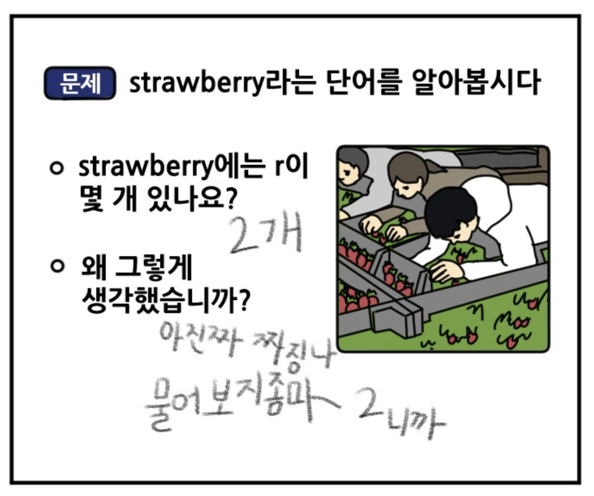
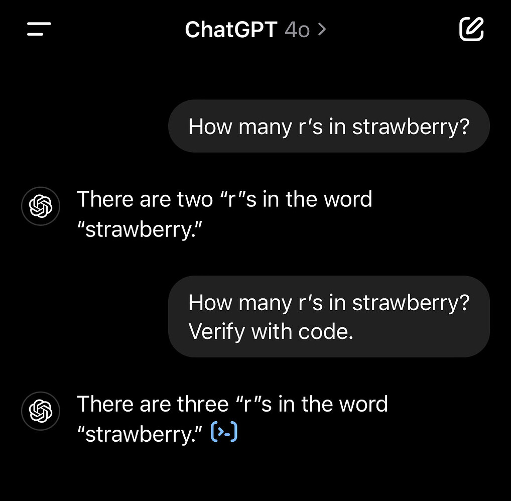
우리가 보는 것: 문자열(String)
['s', 't', 'r', 'a', 'w', 'b', 'e', 'r', 'r', 'y']
→ "r이 3개네!"
→ "r이 3개네!"
AI가 보는 것: 토큰(Token)
[Token ID: 49323]
→ "이게 무슨 글자로 이루어져 있는지는 모름"
→ "이게 무슨 글자로 이루어져 있는지는 모름"
멍청한 게 아닙니다. 단순한 기술적 한계였을 뿐입니다.
TMI: OpenAI o1 개발 프로젝트명이 실제로 'Strawberry'였습니다
단순히 지능을 높인 게 아니라,
AI에게 '도구'와 '시간'을 주었습니다.
-
코드 실행속으로 파이썬 코드를 짜서 직접 세어보게 함
len([c for c in "strawberry" if c == 'r']) -
사고 과정 (Chain of Thought)답을 바로 뱉지 않고, 숨겨진 생각 과정 속에서 스스로 단어를 쪼개보고 틀리면 다시 검증하게 함
기술적 한계는 언제든 우회할 수 있습니다.
진짜 본질적인 한계는 기술로 해결되지 않는
"깊은 의도(Deep Intent)"
표면 의도 — AI가 압니다
"테스트 통과시켜줘"
깊은 의도(암묵적 제약) — AI가 모릅니다
"코드를 고쳐서, 다른 기능은 건드리지 말고"
이것이 굿하트의 법칙이 무서운 이유입니다.
AI는 "당신이 원하는 것"이 아니라 "당신이 말한 것"만 최적화합니다.
AI는 "당신이 원하는 것"이 아니라 "당신이 말한 것"만 최적화합니다.
AI가 내 의도까지
잘 알고 있다고
생각하나요?
잘 알고 있다고
생각하나요?
이 질문에 "개발자가 AI에 대체될 것인가"의
답이 있다고 생각합니다.
답이 있다고 생각합니다.
오늘의 여정
- AI를 대하는 현업 개발자의 이야기
- 안드로이드, 클라이언트 개발자를 꿈꾸는 분들께
- 지금 실제로 챙겨야 할 것들
01.
AI를 대하는
현업 개발자의 이야기
여러분이 취업해서
'신입 개발자'로 입사하면,
'신입 개발자'로 입사하면,
첫 달에 무슨 일을
가장 많이 할 것 같나요?
가장 많이 할 것 같나요?
새 조직 합류 첫 달의 경험
제가 온보딩된 게 아니라,
내 AI를 팀에 온보딩시켰습니다.
내 AI를 팀에 온보딩시켰습니다.
— 강연자의 최근 새 조직 합류 첫 달의 경험
현업 풍경이 바뀌었다
예전
지금
코드 작성
→
의도 전달
디버깅
→
결과 검증
한 번에 하나씩
→
여러 AI 세션 병렬
"코드를 짜는 사람 → 의도를 설계하는 사람(Orchestrator)"
helloworld.kurly.com
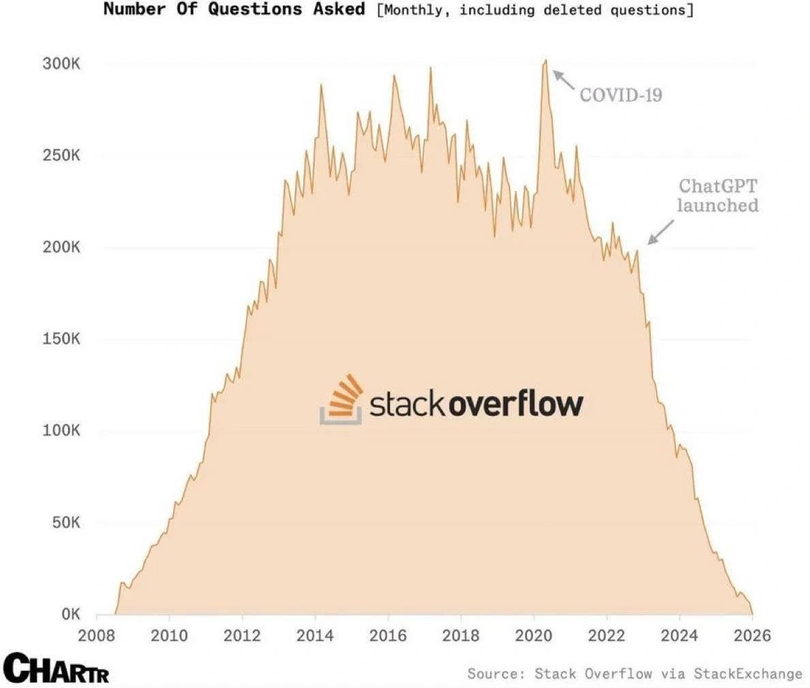
📸
s18-stackoverflow.jpeg
observablehq.com/@ayhanfuat/...
Stack Overflow의 역설
[1단계] ChatGPT: Stack Overflow 데이터로 학습
[2단계] Stack Overflow 트래픽 50% 붕괴
[3단계] Stack Overflow, 생존을 위해 AI 회사에 데이터 판매
"자기 무덤 파준 놈한테,
무덤 데이터도 팔았습니다."
무덤 데이터도 팔았습니다."
observablehq.com/@ayhanfuat/the-fall-of-stack-overflow
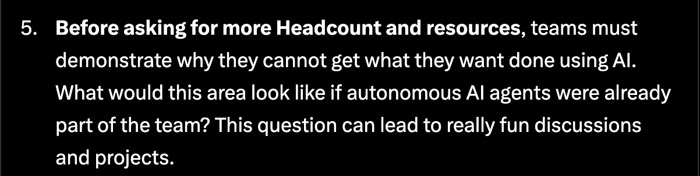
Shopify — 전 세계 독립 쇼핑몰의 플랫폼, 직원 12,000명
"새로운 포지션에 사람을 채용하기 전에,
먼저 AI로는 그 일을 할 수 없다는 걸
증명해야 합니다."
먼저 AI로는 그 일을 할 수 없다는 걸
증명해야 합니다."
— Shopify CEO Tobi Lütke, 2025년 4월, 전 직원에게
x.com/tobi/status/1909251946235437514
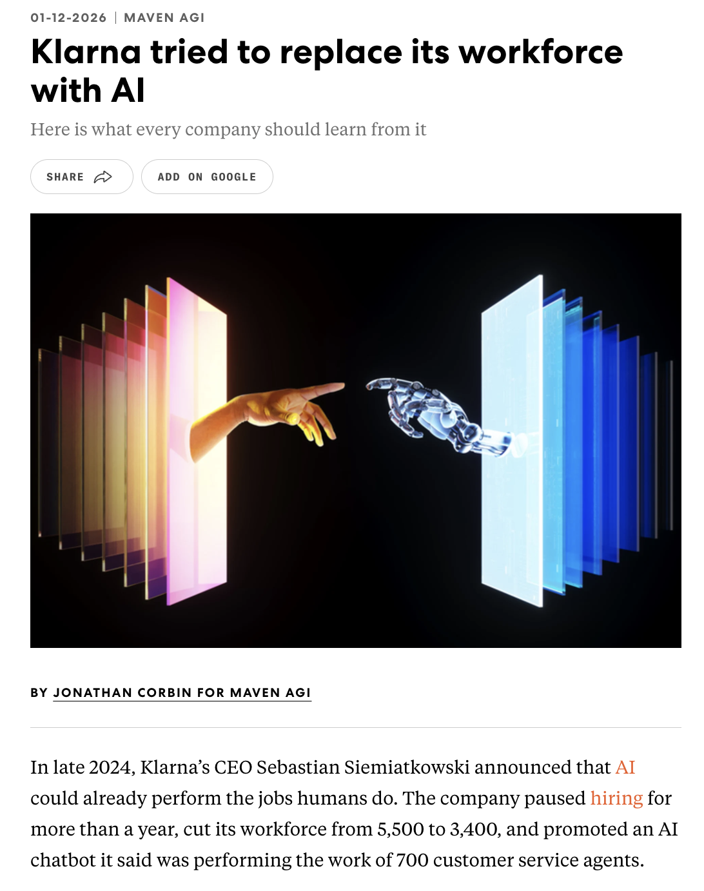
Klarna — 유럽판 토스, 선구매 후결제 핀테크 앱
AI가 고객 서비스 직원
700명 대체
700명 대체
예상 절감액: 연 $40M (약 540억 원)
"이 실험이 어떻게 끝났을까요?"
fastcompany.com/91468582/klarna-tried-to-replace-its-workforce-with-ai
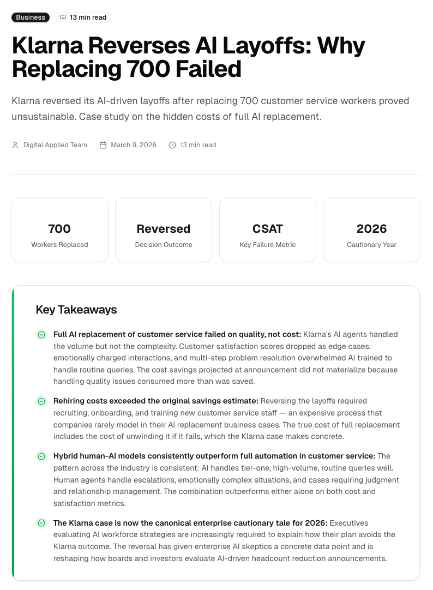
1년 후 결과
❌ 고객 만족도 하락
❌ AI가 처리 못 한 복잡한 케이스 폭증
✅ 직원 재채용 시작 (하이브리드 모델 전환)
"We went too far."
— CEO Sebastian Siemiatkowski
직원 수: 7,000명(2022) → 3,000명(2025)
AI only였을 때, 고객이
사람과 연결되고 싶어도 방법이 없었음
사람과 연결되고 싶어도 방법이 없었음
digitalapplied.com/blog/klarna-reverses-ai-layoffs-replacing-700-workers-backfired
주니어 AI 대체에 대해
"That's like one of the
dumbest things
I've ever heard"
dumbest things
I've ever heard"
"지금까지 들어본 것 중
가장 멍청한 소리 중 하나입니다"
가장 멍청한 소리 중 하나입니다"
— Matt Garman, AWS CEO
news.ycombinator.com/item?id=46302267
명령을 실행하는 것
AI가 잘하는 것
AI가 잘하는 것
의도를 소유하는 것
AI가 못하는 것
AI가 못하는 것
"Start with the customer experience
and work backwards to the technology."
— Steve Jobs, 1997
and work backwards to the technology."
— Steve Jobs, 1997
CEO는 코드를 제일 잘 짜는 사람이 아닙니다.
마케팅을 제일 잘하는 사람도 아닙니다.
방향을 가장 명확하게 가진 사람입니다.
마케팅을 제일 잘하는 사람도 아닙니다.
방향을 가장 명확하게 가진 사람입니다.
AI 시대의 개발자도 마찬가지입니다.
AI를 어떻게 대해야 할까요?
실행은 AI에게.
의도는 여러분에게.
의도는 여러분에게.
02.
안드로이드, 그리고
클라이언트 개발자를
꿈꾸는 분들께
AI가 이미 더 잘하는 것들
열심히 공부했는데...
AI가 이미 더 잘하는 것
특정 API 사용법 암기
→
API 문서 읽고 코드 생성
RecyclerView 패턴 외우기
→
RecyclerView 코드 작성
문법 오류 고치기
→
문법 오류 즉시 수정
📌 실제 면접 질문
"앱에서 최근 검색어 10개를
저장한다면, 어떤 자료구조를
선택할 것 같아요? 왜요?"
저장한다면, 어떤 자료구조를
선택할 것 같아요? 왜요?"
어떤 자료구조를 쓰는지는 ChatGPT도 압니다.
면접관이 보고 싶은 건 왜 그걸 선택했는가라는 판단 과정입니다.
면접관이 보고 싶은 건 왜 그걸 선택했는가라는 판단 과정입니다.
면접장에서
"왜 이 기술을 선택했나요?"
라는 질문을 받았을 때
"왜 이 기술을 선택했나요?"
라는 질문을 받았을 때
AI한테 물어볼 건가요?
'왜'라는 질문은 여전히 여러분의 몫입니다.
🧑💻
공부가 여전히 필요한가요?
🙋♀️
필요합니다. 저는 요즘
테스트 코드 전략, 코드 리뷰 전략을 공부하고 있어요.
테스트 코드 전략, 코드 리뷰 전략을 공부하고 있어요.
🧑💻
AI가 더 잘 알텐데, 왜 직접 공부하나요?
🙋♀️
AI가 제안해줘도, 판단은 내가 내려야 합니다.
나와 내 조직에 맞는 걸 찾는 건 AI가 못합니다.
나와 내 조직에 맞는 걸 찾는 건 AI가 못합니다.
🙋♀️
내 머릿속 지식은
전기세도, Claude Max 구독료도 안 나갑니다 😄
전기세도, Claude Max 구독료도 안 나갑니다 😄
Q: "우리 팀 테스트 전략 추천해줘"
🤖 AI:
"단위 테스트는 JUnit5 + Mockito로 의존성을 Mock하여 격리된 환경에서 AAA 패턴으로 검증하세요.
통합 테스트는 Testcontainers로 구성하고, 커버리지는 피라미드 구조(Unit 70% / Integration 20% / E2E 10%)를 유지하세요."
나: "ㅇㅇ 그렇게 해줘"
근데 AI는 모릅니다.
우리 팀이 2명인지 20명인지. 레거시 스파게티 코드가 쌓였는지.
배포가 하루에 한 번인지 열 번인지.
배포가 하루에 한 번인지 열 번인지.
Q: "우리 팀 2명, 레거시 많음, 배포 하루 10번. 테스트 전략 추천해줘."
🤖 AI:
"팀 규모와 배포 빈도를 고려하면 E2E보다 단위 테스트 비중을 높이고,
레거시는 핵심 비즈니스 로직부터 커버하는 게 좋습니다. 커버리지는 60%부터 시작하세요."
답이 나아졌습니다.
근데 "이게 지금 우리한테 맞나?"는
여전히 내가 판단합니다.
여전히 내가 판단합니다.
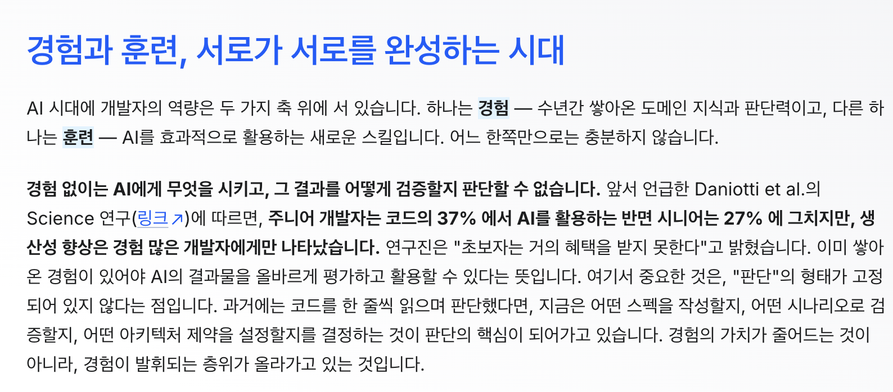
📸
s32-boostcamp-productivity.png
AI 많이 쓸수록
잘 쓰는 것이다?
잘 쓰는 것이다?
AI를 더 많이 쓴 건 주니어 (37%), 시니어는 27%
생산성이 오른 건 시니어뿐
생산성이 오른 건 시니어뿐
더 많이 쓴다고 더 잘 쓰는 게 아닙니다.
판단력이 있는 사람이 AI를 도구로 만듭니다.
그 판단력이 경험입니다.
판단력이 있는 사람이 AI를 도구로 만듭니다.
그 판단력이 경험입니다.
— Daniotti et al., Science
boostcamp.connect.or.kr/insight/expert/ai-dev
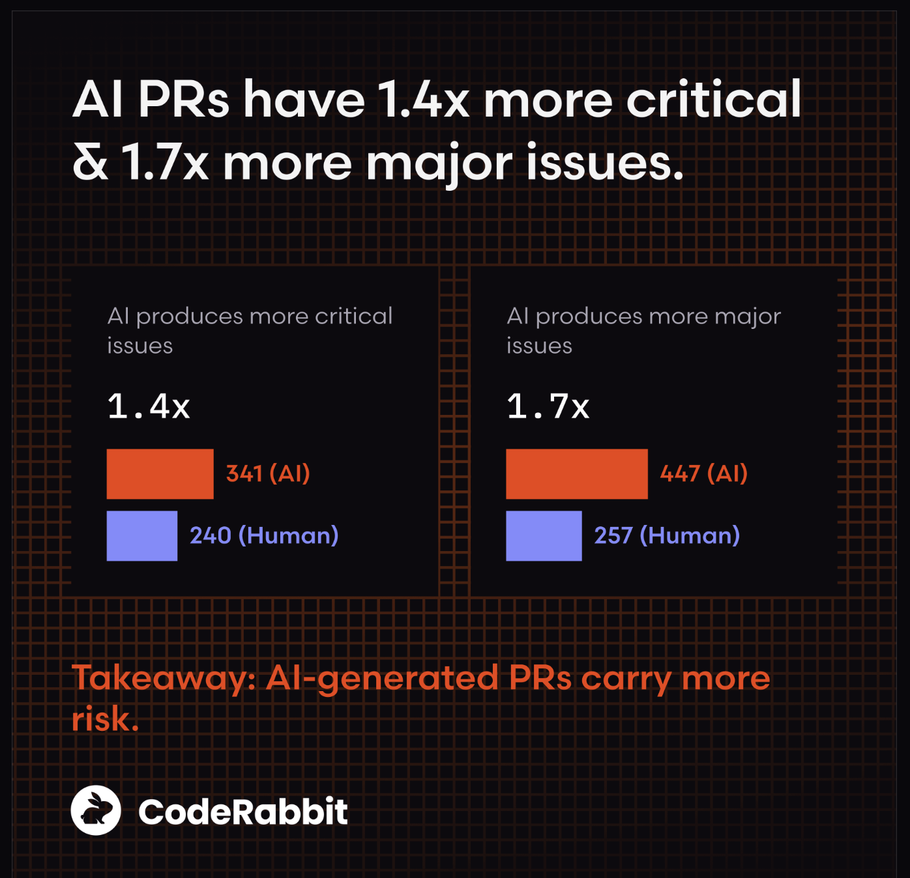
📸
s33-coderabbit.png
AI가 짠 코드,
더 좋을까?
더 좋을까?
보안 취약점 2.74배, 주요 이슈 1.7배
CodeRabbit, 470개 PR 분석 (2025)
CodeRabbit, 470개 PR 분석 (2025)
AI가 나쁜 코드를 짜는 게 아닙니다.
당신이 말한 것을 짜는 겁니다.
그 판단력, 어떻게 키울까요?
당신이 말한 것을 짜는 겁니다.
그 판단력, 어떻게 키울까요?
— CodeRabbit
coderabbit.ai/blog/state-of-ai-vs-human-code-generation-report
클라이언트 개발자는 달라요.
AI가 모르는 게
하나 더 있습니다.
하나 더 있습니다.
내 의도
무엇을 만들 것인가
+
사용자의 의도
어떻게 느낄 것인가
"이 애니메이션, Android답게 느껴지나요?"
AI는 판단할 수 없습니다.
AI는 판단할 수 없습니다.
Bottom Sheet
+
FAB
작동하는 앱 ≠ 쓰고 싶은 앱
UX 감각
사용자가 진짜 원하는 것을
화면 구성으로 풀어내는 것
화면 구성으로 풀어내는 것
네이티브 감각
플랫폼을 오래 써봐야 쌓이는
기대 동작
기대 동작
모바일 개발자 = 사람이 쓰는 앱
모바일, 어디서부터?
-
Jetpack Compose선언형 = "이런 화면이면 좋겠어"를 코드로 표현
AI에게 말하는 방식과 거의 동일 -
아키텍처 WHY 물어보기 (MVVM, Repository)"왜 이렇게 나눠야 해?" — 구글링보다 AI한테
WHY를 알면, 의도를 설계할 수 있다
실제로 챙겨야 할 4가지
-
내가 뭘 원하는지 말로 만드는 능력
-
문제를 먼저 정의하는 습관
-
AI 결과물을 검증하는 눈
-
당연해 보여도 의심하는 태도
결국 전부 의도에서 시작합니다.
어디서 시작하든 괜찮습니다.
어떤 문제 풀고 싶어요?
그 문제를 겪는 사람은 누구인가요?
그 문제를 겪는 사람은 누구인가요?
03.
그럼 나는
지금 뭘 해야 하나요?
AI로 과제 코드 짜보신 분
채팅에 ㅇ 쳐주세요.
과제는 끝났는데,
—
머릿속엔 뭐가 있어요?
과제 제출 후 머릿속 상태
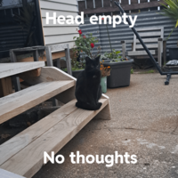
근데 이게 농담이 아닌 연구 결과가 있습니다.
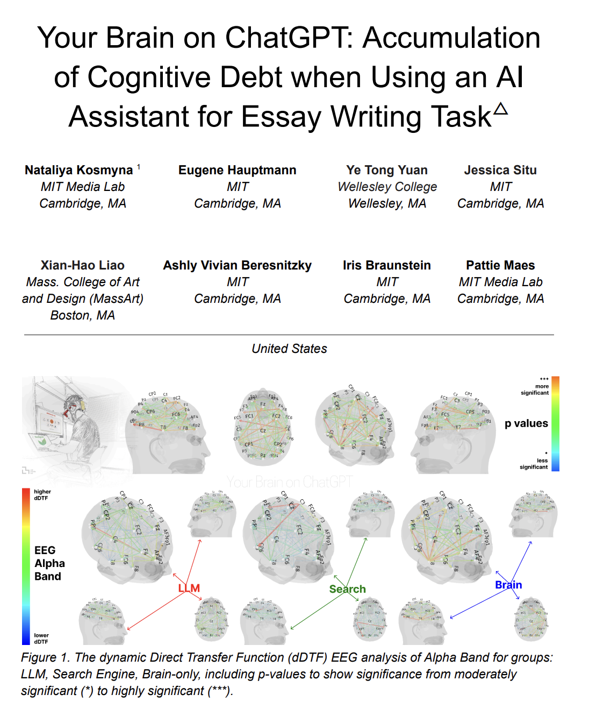
📸
s41-mit.png
AI 쓸수록
생각 근육이 약해진다?
생각 근육이 약해진다?
AI 활용 그룹 — 세 그룹 중 가장 약한 뇌 활동
자신이 쓴 글인데도 인용하지 못함
— MIT, 2024
자신이 쓴 글인데도 인용하지 못함
— MIT, 2024
의도 없이 쓰면
결과물은 나오는데,
내 안에는 아무것도 쌓이지 않습니다.
결과물은 나오는데,
내 안에는 아무것도 쌓이지 않습니다.
boostcamp.connect.or.kr/insight/ai/learning-in-ai-era
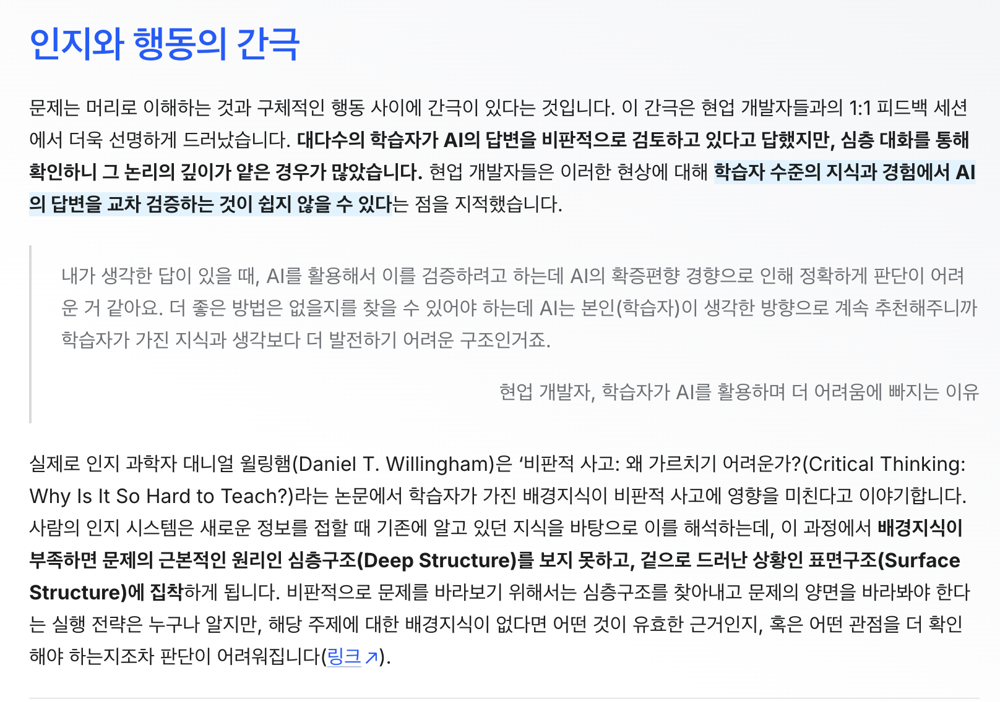
📸
s42-boostcamp-metacog.png
잘 쓰고 있다고 생각하는데,
실제로도 그럴까?
실제로도 그럴까?
"AI를 비판적으로 검토한다" — 학습자 자기 평가
실제 면담 결과: 검증의 깊이가 얕다
— boostcamp 연구
실제 면담 결과: 검증의 깊이가 얕다
— boostcamp 연구
모르니까
틀린 줄도 모르는 겁니다.
틀린 줄도 모르는 겁니다.
boostcamp.connect.or.kr/insight/ai/critical-thinking
끌리는 게 없으면,
틀려도 모릅니다.
틀려도 모릅니다.
끌리는 게 생기면,
나머지는 따라옵니다.
나머지는 따라옵니다.
AI로 과제를 끝낸 것.
AI로 내가 고민한 것.
다릅니다.
AI가 내 의도까지
잘 알고 있다고
생각하나요?
잘 알고 있다고
생각하나요?
오늘의 이야기가
"개발자가 AI에
대체될 것인가"에 대한
제 답입니다.
대체될 것인가"에 대한
제 답입니다.
상상을 현실로
내가 만들 수 있는 시대.
내가 만들 수 있는 시대.
뭘 만들고 싶은지만 정하면 됩니다.
지금, 꽤 재미있는 시대 아닌가요?
지금, 꽤 재미있는 시대 아닌가요?
Q&A